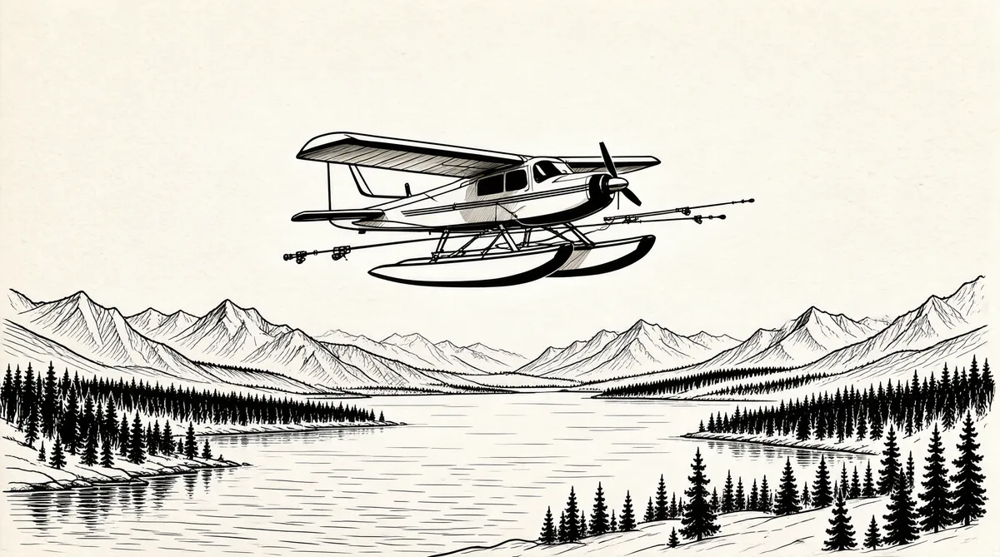

第36章 两只落汤鸡

长期以来，巴菲特一直渴望在出版领域占据一席之地。自从报纸出现以来，大多数都是由一些家族控制，直到最近才有要出售的企业，并且看起来还很便宜。他和查理·芒格也开始了一个接一个的收购活动。他们尝试着从斯克里普斯·霍华德那里购买《辛辛那提问讯报》，不过没有成功。1他们还打算为蓝筹印花公司买进斯克里普斯家族的另一家企业——新墨西哥论坛公司，该公司旗下拥有《阿尔伯克基论坛报》2——最后也以失败而告终。
1971年，《华盛顿月刊》的出版商查理·彼得斯接到了巴菲特打来的电话，请求他牵线，帮巴菲特和芒格结识《华盛顿邮报》的出版商凯瑟琳·格雷厄姆。巴菲特说他和芒格已经购买了《纽约客》的股票，并且想把这份杂志整个买进。他们已经同《纽约客》的董事长——该杂志的一个大股东——彼得·弗里茨曼谈过了，他也想出售自己的股份。不过他们需要一个合伙人一起购买该杂志，他们认为《华盛顿邮报》可能是最佳的选择。
接到这个电话，彼得斯并不感到吃惊。他转念一想，认为巴菲特肯定是对《华盛顿邮报》的股票感兴趣，因为格雷厄姆家族正在让公司上市。他之所以继续持有《华盛顿月刊》，也许正是因为最近有些报纸正在公开发行股票。如果能够以《华盛顿月刊》为突破口打进《华盛顿邮报》，那么所有在它上面花费的投资也算物有所值了。
在1971年《华盛顿邮报》即将公开发行股票时，3彼得斯安排了一次会面，探讨双方合作购买《纽约客》的事宜。巴菲特从来没有购买过公开发行的股票，因为他感觉这些股票都是被大肆鼓吹和宣传出来的；它们的价格被高估了，同那些不受人喜爱的“烟蒂”或者价值洼地正好相反，如他和芒格购买的美国运通公司或喜诗糖果公司的股票。因此，巴菲特并不打算购买《华盛顿邮报》的股票。但是他和芒格仍然飞到了华盛顿，在《华盛顿邮报》的总部同凯瑟琳·格雷厄姆会面。那是一座8层高的白色哥特式大楼，建造于20世纪50年代，正面高悬“华盛顿邮报”几个大字。
尽管凯瑟琳·格雷厄姆是《华盛顿邮报》的出版商，但是接管该报时已经不年轻了。8年前她开始接管该报，当时她46岁，一个寡妇，带着4个孩子，从来没有经营过报纸。现在她已经全力以赴，在投资者和新闻界的不断质疑之下，仍然能够勇敢地迎接挑战，管理一家上市公司。
查理和我同她进行了一次短暂的接触，只有20分钟。我不知道她是个什么样的人。我不知道她会害怕自己的公司。那天正下着大雨，因此我们进去时就像两只落汤鸡，你能想象出来我们当时的寒酸样子。
在她的办公室落座后，她对我们十分热情，然后她建议我们去见见董事长弗里茨·毕比，他是纽约真正起推动作用的人，我们听从了她的建议。但是，我们没有取得任何进展。
当时，格雷厄姆对购买《纽约客》不感兴趣，巴菲特的这次造访无功而返。这次会面，也没有留下任何她和巴菲特将来会成为好朋友的迹象。不管怎么说，他在她心中没有留下什么印象。对巴菲特来说，尽管她仍然是个漂亮的女士，但是他还没有发现她有什么特别吸引人的地方，这可能是因为巴菲特喜欢像戴茜·梅尔那样温柔贤惠而又体贴关爱的女人。再者，他们的背景也有天壤之别。
凯瑟琳·格雷厄姆出生于一个富有的家庭，之后不久就迎来了咆哮的20世纪20年代。父亲吉恩·梅耶是犹太人，一个投资家和《华盛顿邮报》的出版商。母亲艾格尼丝是上流社会出名的交际家，只关心自己的事情。家里人在背后都叫她“大艾格”，因为她个子高挑，随着年龄的增加，她的腰身也不断变粗。艾格尼丝之所以嫁给这个犹太人，至少在一定程度上是看中了他的钱财。不过和她的丈夫和5个孩子完全不同，她极其喜爱中国艺术、音乐、文学和其他艺术。他们在基梭山拥有一座粉中带灰色的别墅，俯瞰着威彻斯特县的拜瑞湖。另外，他们在纽约第五大道还有一套公寓，在华盛顿特区另有一座巨大的维多利亚风格的房子。他们轮流在这三个住所居住。
凯瑟琳最初几年是由母亲照顾的，她们住在基梭山的别墅里。这里被人们称为“农场”，因为它包括一个巨大的果园兼花园兼牛奶场，还有一个古老的农舍，这个农舍是农场工人们的单身宿舍。餐桌上的每样蔬菜、每个水果都来自周围的农地和果园。凯瑟琳吃的肉来自农场自己养的猪和鸡，喝的牛奶来自农场的泽西种乳牛。每天每个房间的桌子上都摆满了鲜花，甚至在华盛顿的家中也有从基梭山的花园快递过去的鲜花。威彻斯特县别墅的墙上挂满了中国的名画；里面还有当时地位和身份的象征：一个室内游泳池，一条保龄球道，一个网球场以及一架巨大的管风琴。
凯瑟琳可以从一群骏马中选择自己的坐骑，这群马英俊高大，足以和灰姑娘的马队相媲美。她常常到处度假，有一次甚至跑到德国去拜访阿尔伯特·爱因斯坦。有时艾格尼丝会带着孩子们去野营，教他们独立生活的能力；他们大概要带5个农场的雇工、11匹鞍马和17匹驮马随行。
但是孩子们要见他们的母亲还必须预约。他们要狼吞虎咽地吃饭，因为当仆人在长长的餐桌上上菜时，要先给艾格尼丝盛。当仆人开始给其他人盛菜时，她已经开始吃了；而且她自己一吃完，就要求把其他人的盘子也迅速撤走。她自己也承认，她不爱自己的孩子。她让奶妈、家庭教师和骑师来照顾他们；她把他们打发到夏令营、寄宿学校和舞蹈班。他们唯一的玩伴是他们自己，以及仆人的孩子们。艾格尼丝常常醉酒，同许多名人调情和交往（不过只是柏拉图式的精神恋爱）。她瞧不起其他任何妇女，包括自己的女儿。她竟然拿凯瑟琳同美国的甜心宝贝秀兰·邓波儿相比，后者是一位集唱歌、跳舞和甜蜜微笑为一身的美国童星，长着满头金色卷发。4“如果我说我喜欢《三个火枪手》，”格雷厄姆回忆道，“她会说我不可能真正读懂它，除非我能够像她一样读了法文原版。”5凯瑟琳所接受的训练就像是杂交的兰花一样，美丽而又娇生惯养，其潜力常常受到严厉的指责，或者是被忽视。然而，当她到华盛顿特区的马德拉学校上学时，却突然学会了招人喜爱的技能，并且被选为班长——在那时这是很令人吃惊的事，因为她具有一半犹太人血统。
在信奉新教的基梭山家中，他们过着与世隔绝的生活。因为艾格尼丝坚决主张要把孩子们培养成新教徒——尽管这违犯了当时的宗教习俗——他们甚至忽视了他们的父亲是犹太人这一事实，格雷厄姆不明白他们为什么要与世隔绝。后来她在瓦萨尔学院上学时，有一次感到非常震惊，不知所措。当时一位朋友向她道歉，因为有人在她面前发表了一通贬低犹太人的言论。她事后才醒悟过来，她在血统上的冲突“要么使你具有超强的生存能力，要么使你乱成一团”。6
凯瑟琳从母亲那里学会了对小事不拘一格，慷慨大方，害怕受欺骗，不愿轻易放弃以及对他人持怀疑态度，认为别人都想利用她。据她自己描述，她也形成了喜爱指挥人的倾向。7然而，在别人看来，她天真质朴，坦率正直，慷慨大方，心胸开阔。不过她似乎都不承认这些优点。
尽管她的父亲公务繁忙，对人冷淡，对她却很支持，因而她似乎感觉和他更亲近些。为了吉恩·梅耶，她把热情投在了经济学上——最后这些知识也用上了，从来没有任何浪费。她父亲在经济学方面很有天赋，再加上他付出了大量的时间、金钱和精力，从而拯救了奄奄一息的《华盛顿邮报》，使它能够继续生存发展下去。当时，凯瑟琳正在日渐长大成人，而这家报纸在首都华盛顿地区的五家报纸中仍然排在最后，远远落后于主流报纸《华盛顿明星晚报》。8但是到了1942年，当梅耶开始考虑退休时，凯瑟琳当医生的哥哥比尔没有兴趣经营一家不赢利的报纸，因此责任落在了凯瑟琳和她的新婚丈夫菲利普·格雷厄姆身上。凯瑟琳迷上了菲利普，她认为自己没有什么能力，就理所当然地接受了父亲的决定，把《华盛顿邮报》近2/3有表决权的股份转给了菲利普，授予他绝对的控股权。梅耶之所以这么做，是因为他认为男人不应该为自己的妻子工作。剩下的股份由凯瑟琳拥有。9
尽管梅耶热切希望把这份报纸继续创办下去，但是当菲利普·格雷厄姆接手后，事态立即失去了控制。编辑部和发行部的几位员工一天的大部分时间不是在赌赛马，就是在喝酒。当梅耶不在城里时，办公室勤杂工每天所做的第一件事就是给每个人送半品脱的白酒和一份《每日赛讯》。10
菲利普·格雷厄姆着手对此进行整顿，并且开始加大政治报道的版面，培养报纸的特性，同时用强硬自由的声音加强社论版的力度。他收购了《新闻周刊》和几家电视台，这都表明他是一个出色的出版商。但是随着时间的推移，酗酒狂欢、脾气暴躁、情绪不稳以及冷酷的幽默感，使他变得越来越古怪，尤其是对他妻子常常毫不留情地讽刺抨击。当凯瑟琳体重增加时，他称她为“肥猪”，并且给她买了一个瓷猪。她很少为自己考虑，以至于她还认为这个玩笑很有趣，把这个瓷猪放在了显眼的地方。
“我很害羞，”她说，“我害怕被别人抛弃了，因为我会惹他们厌烦。当我们一起出去时，我从不说话；我都让他说……他真的很聪明、很风趣，是个不可思议的多面手。”11
她的丈夫利用了她的恐惧感。当他们和朋友一起外出时，只要她一开口讲话，他就盯着她。她感觉到他似乎在告诉她，她讲话太多，正在使人生厌。她也认为自己不善于交际，永远也不能达到别人的期望，更不可能像秀兰·邓波儿一样迷人。毫无疑问，随着时间的推移，她不再公开讲话，总是让菲利普替她出面。12她变得非常没有安全感，甚至在聚会前会恶心呕吐。据有人称，菲利普私下里对她更恶劣。13她的4个孩子全都见证过父亲对他们母亲的伤害。他喝得酩酊大醉，回来就发酒疯，吓得她浑身发抖，不知所措。
她从来没有和菲利普对着干过，甚至当他和一群女人鬼混时也没有，这其中可能还包括杰克·肯尼迪的情妇。14相反，她维护他，帮他辩护，称他具有个性魅力，聪明能干，又有智慧，容易遭到别人的嫉妒。他的行为越是残暴，她越是想取悦他。15“我认为菲利普差不多把我给改造了，”她说，“我的兴趣提高了，我也更加自信。”16他认为她嫁给他十分幸运，而她也这么想。他最终弃她而去，投入《新闻周刊》编辑罗宾·韦伯的怀中。当她的一个朋友知道此事后，对她说：“太好了！”她当时就目瞪口呆。她从来没有想过离开了菲利普她的生活会更美好。但是，他随后就开始想方设法将报纸从她手中夺走，毕竟他控制了2/3的股份。凯瑟琳十分害怕会丢掉家族的报业。
1963年，当她正在同菲利普争夺报纸的控制权时，他在一次公开活动中突然病倒，被诊断为躁郁症，送到了一家精神病医院治疗。六周后，他借口周末回家休养逃离医院。他回到坐落于弗吉尼亚州格伦韦尔比的家中。周六，他和凯瑟琳一起吃了午饭，然后他在楼下一间浴室中开枪自杀，时年48岁。当时她正在楼上的卧室睡午觉。
他一自杀，报纸就归凯瑟琳所有，威胁消失了。虽然她十分害怕掌管这份报纸，但是当有人建议她卖掉报纸时，她却下定决心自己来管理；她要接手管理工作，直到她的孩子长大成人来接替她。“我对管理一无所知，”她说，“我甚至对复杂的编辑问题一点儿都不懂，我不知道秘书是干什么的，我不知道哪些事情重要，哪些不重要。更糟糕的是，我根本分不清事情的轻重缓急。”
尽管格雷厄姆有时已经能够表现出坚定的信心，但是在工作中，她仍然需要依赖别人，因为她不断地重新思考和质疑自己的决定。17“我不断地从那些经营报纸的报业人身上学习管理，”她写道，“当然，他们都是男人。”但是她从来没有信任过他们或者其他人——当然了，她身边的人没有一个用值得信赖的方式对待过她。她会试探性地把信任放在某个人身上，然后转念一想，又收了回来。时而热情时而冷淡，对手下人不满意，导致她在公司获得了一个可怕的声誉。而她却又总是在寻求建议。
“有时一天要做出好几个决策，而她根本不确定怎么进行——常常是很难做出决定——她会打电话给董事们、朋友们，她认为他们可能会有相关的经历，能够给她一些建议。这一方面是为了得到建议，来帮她处理问题，同时也是为了看看哪个朋友的建议更合理，以后好再次向他们求助。”18
最开始，她常常依赖弗里茨·毕比律师——《华盛顿邮报》的董事长。他在凯瑟琳刚刚接管这份新工作之初，就给她很大的支持。19当时，《华盛顿邮报》依然是华盛顿地区三家仅存报纸中发行量最小的一份，年收入仅8500万美元，利润仅400万美元。
她渐渐地适应了自己的角色。她和主编本·布拉德利都很有远见，把竞争对手《纽约时报》作为自己的标准，想办成一家全国性的报纸。布拉德利出生于波士顿的盎格鲁–撒克逊基督教新教家庭，毕业于哈佛大学，第一任妻子是美国一位参议员的千金。他曾经在情报机构工作过，然后转行当记者。风趣，聪明，有时还有点儿出人意料的尖刻，同他的个人背景很不相符。在格雷厄姆的鼎力相助下，他发挥了最佳的能力——鼓励记者在宽松的环境中自由发挥，同时参与激烈的竞争。不久之后，《华盛顿邮报》就以严谨的新闻风格而著称。在她接管报纸三年后，就力荐布拉德利为总编辑。
1970年，凯瑟琳的母亲艾格尼丝在病床上去世，她终于从母亲的专横之中解脱出来。当时正是劳动节的那个周末，凯瑟琳前往基梭山的别墅休假。仆人告诉她艾格尼丝一直没有按铃让人送晚饭过去，凯瑟琳立即上楼到母亲的卧室看看是怎么回事，结果发现她躺在床上，“全身僵硬冰冷”，格雷厄姆在自传中这样写道。她没有哭，尽管有时一些庸俗不堪的小说和电影都能引得她泪流满面，并且有时在生气或者受伤时她也会流泪——她在自传中这样解释——然而当任何人死时，她从来不会哭泣。20尽管艾格尼丝·梅耶的去世减轻了格雷厄姆的重负，但并没有消除她的不安全感。
1971年3月，反对越南战争的运动正如火如荼地进行着，《纽约时报》突然刊载了一份五角大楼的秘密档案——这是份绝密档案，是前国防部长罗伯特·麦克纳马拉所撰写的越南政策报告。它揭示了政府从一开始就在欺骗公众，并将残忍地把国家引入无底深渊。21该文件分47卷，共7000余页，它最终得出的结论是政府在欺诈和愚弄美国公众。6月13日星期日，《纽约时报》开始刊登该文件。
6月15日，大约是巴菲特和芒格在华盛顿格雷厄姆的办公室和她会面之后的两个星期，联邦地区法院下达了一道禁令，禁止进一步刊登该文件。这是有史以来美国法官第一次禁止报纸刊载报道，引发了公众对宪法问题的巨大争议。
《华盛顿邮报》认为这一消息很有价值，决定插手五角大楼文件。通过消息灵通人士的不懈努力和接触，一位编辑追踪到了这些文件的来源——丹尼尔·埃尔斯伯格，一位越战问题专家。于是，这位编辑立即带着一个空箱子飞到波士顿，把这份五角大楼文件带回了华盛顿。
此时，格雷厄姆已经掌握了一些做出版商的基本原则，尽管她仍然对别人的意见言听计从，有点儿局促不安。再者，“我们正要公开上市，但是我们的股票还没有开始出售”，她回忆道，“对一个公司来说，这是一个非常敏感的时期，如果我们被告上法庭或者被禁止发行，就会受到毁灭性的打击……商人们都说要么别登，要么再等一天；律师们说不要登；另一部电话的话筒里编辑们却对你说，你不得不登”。
“如果我们不刊登，那我就辞职，”本·布拉德利说，“很多人都会辞职。”
“每个人都知道我们得到了那些文件，”格雷厄姆后来写道，“在《纽约时报》被迫停止刊载后，继续保持这种冲劲十分重要，因为问题是政府是否有权事先限制媒体的新闻报道。而且我也感觉到正如本所说的，如果我们屈服的话，就会打击编辑们的意气与斗志，新闻的道德底线就会沦丧，我们的一举一动都会产生重要的影响。”
6月的一天，格雷厄姆正在乔治敦公寓的阳台上欣赏美丽的午后风景，突然有个电话打进来。她走进书房，在一个小沙发上坐下，然后拿起电话。电话是《华盛顿邮报》的董事长弗里茨·毕比打来的。他告诉她说：“恐怕你要作决定了。”格雷厄姆问毕比他会怎么做，他回答说他不会刊登。
“为什么我们不能等一天呢？”格雷厄姆问道，“这个问题《纽约时报》都讨论了三个月。”接着布拉德利和其他的编辑也打来了电话。他们说：据谣传很多人都知道我们得到了文件，社内社外的记者们都在盯着我们，我们必须行动，并且我们必须今晚就行动。
当时，《华盛顿邮报》的总裁保罗·伊格内修斯也在书房中，就站在格雷厄姆的身边。她说：“我只有1分钟的时间来决定。”
因此她要琢磨弗里茨·毕比的话。他刚才不紧不慢地说他想他不会，同时又表示如果她决定做出不同的选择，他也会支持她的。
“我说：‘好吧好吧，就这么定了，刊登。’然后，我挂断了电话。”22
在那一刻，这个在做出每个决定都要向别人寻求建议的女人意识到，只有她才能做出选择；当被迫深入下去形成自己的意见时，她发现自己确实知道该怎么做。
在那个下午即将结束时，政府向法院起诉《华盛顿邮报》。第二天，6月21日，杰哈德·格泽尔大法官裁决支持报纸，拒绝签发禁令禁止它继续刊登五角大楼文件。不到两周之后，最高法院支持他的裁决，并且称政府不应该以“沉重负担”为由要求司法裁决，以国家安全为由禁止报纸出版。
随着在五角大楼文件事件的胜利，《华盛顿邮报》开始蜕变，从一家只刊登地方新闻的地方报纸，一跃而成为一家重要的全国性大报。
“她的作用，”记者鲍勃·伍德沃德写道，“就是不断提高跳高的横杆，轻柔而又残酷。”23